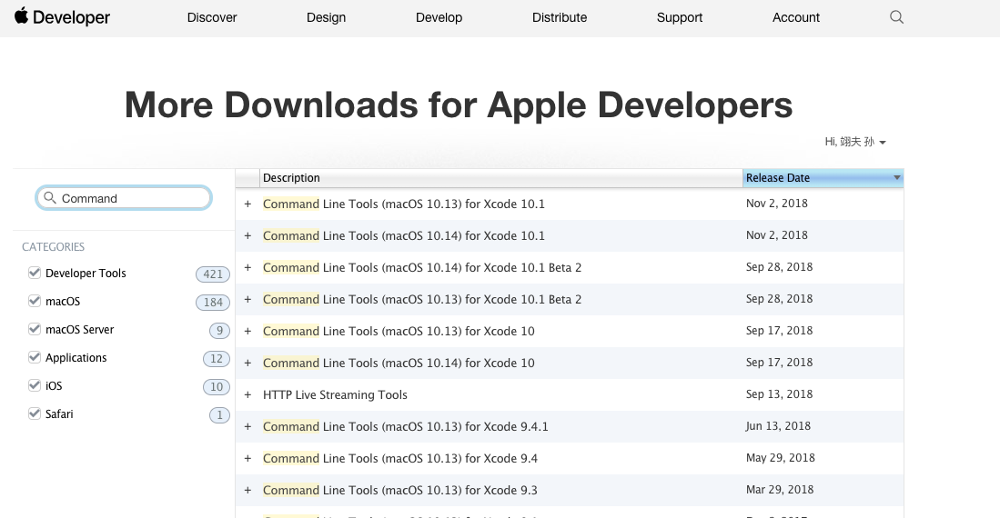

- 一些基本软件
* XCode Command Line Tools
* homebrew
* homebrew cask
* google-chrome
* shadowsocksx-ng
* atom
* virtualbox
* vagrant
* 微信开发者工具
* typora
* NodeJS
* java
一些基本软件
XCode Command Line Tools
直接在App Store下载适合系统版本的xcode
xcode-select --install
但是通常下载xcode需要很长的时间，如果不是IOS开发咱们也没有必要等。
可以直接从官网下载
https://developer.apple.com/download/more/
直接选择合适的版本就行

homebrew
谁用谁知道
/usr/bin/ruby -e "$(curl -fsSL https://raw.githubusercontent.com/Homebrew/install/master/install)"
清华大学开源软件镜像站
https://mirror.tuna.tsinghua.edu.cn/help/homebrew/
homebrew cask
brew tap caskroom/cask
安装homebrew cask之后 许多常用软件就可以通过这个安装了
官方GIT仓库 https://github.com/Homebrew/homebrew-cask
使用说明
brew cask uninstall 软件名通过 Homebrew Cask 安装软件brew cask uninstall 软件名卸载通过 Homebrew Cask 安装的软件brew search 关键字这一句并没有 cask 通过homebrew去搜索，cask软件会标记出来brew cask info 软件名查找相关软件的信息brew cask cleanup删除 Homebrew Cask 下载的包brew cask list列出通过 Homebrew Cask 安装的包brew cask update更新 Homebrew Cask
google-chrome
brew cask install google-chrome
shadowsocksx-ng
brew cask install shadowsocksx-ng
atom
brew cask install atom
virtualbox
brew cask install virtualbox
vagrant
brew cask install vagrant
微信开发者工具
brew cask install wechatwebdevtools
typora
一个巨推荐的markdown编辑器
brew cask install typora
NodeJS
个人推荐使用nvm安装 可以指定版本
https://github.com/creationix/nvm
直接按照readme跑就行
java
一般来说直接通过oracle下载就行
但是oracle不是最近要收费
我使用的是 Zulu open jdk
https://www.azul.com/downloads/zulu/
区别不大 起码我现在没遇到什么因为jdk版本的问题